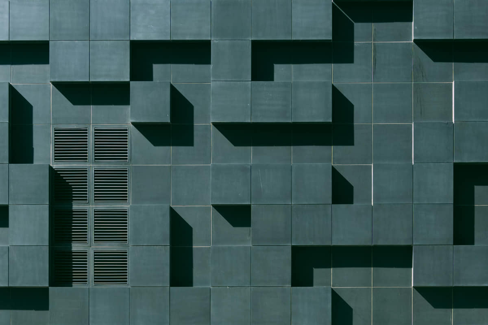

ABOUT-US PAGE
Some text about who we are and what we do.
Jaguar is one of the world's most renowned luxury car brands,
known for its exceptional craftsmanship, sleek design, and innovative engineering.
Originally founded as a motorcycle sidecar company in the early 1920s, Jaguar has grown into a global icon for performance and luxury.
Over the decades, Jaguar has delivered some of the most celebrated cars in automotive history, combining cutting-edge technology with timeless elegance.
Whether it's the distinguished growl of its engines or the comfort of its interiors,
Jaguar cars are designed for those who seek more than just transportation — they are built for driving enthusiasts who value sophistication, style, and performance.
Our team

MANN PATEL
CEO
pmann@gmail.com

JAYSHREE & RAJESH PATEL
Managing directors
raju@Yahoo.com

NISHTHA PATEL
C.A.
nishu@gmail.com
- 1922: Humble Beginnings
The company was founded as the Swallow Sidecar Company by William Lyons and William Walmsley in Blackpool, England, focusing on producing motorcycle sidecars.
- 1935: Birth of Jaguar
The name "Jaguar" first appeared on the SS Jaguar 2½-litre saloon. The car was celebrated for its stylish design and high performance.
- 1945: Rebranding to Jaguar Cars Ltd
After World War II, the company officially changed its name to Jaguar Cars to avoid associations with "SS."
- 1948: Iconic XK120 Launched
The Jaguar XK120, the fastest production car at the time, was unveiled. It marked the beginning of Jaguar’s dominance in sports car innovation.
- 1951 & 1953: Le Mans Glory
Jaguar won the 24 Hours of Le Mans in 1951 and 1953 with the C-Type, solidifying its reputation as a high-performance car manufacturer.
- 1961: Launch of the Legendary E-Type
The Jaguar E-Type debuted, becoming an instant icon due to its stunning design and performance. Enzo Ferrari famously called it "the most beautiful car ever made."
- 1989–1990: Ford Acquires Jaguar
Jaguar was bought by Ford Motor Company, helping the brand expand its global reach and resources.
- 2008: Tata Motors Acquires Jaguar
Tata Motors of India acquired Jaguar, pairing it with Land Rover under the Jaguar Land Rover (JLR) group.
- 2013: F-Type Returns
Jaguar reintroduced the F-Type, a sleek sports car inspired by the legendary E-Type.
- 2020s: Electrification and Innovation
Jaguar shifted focus to electric vehicles, launching the Jaguar I-PACE, its first all-electric SUV, reflecting its commitment to sustainability and innovation.